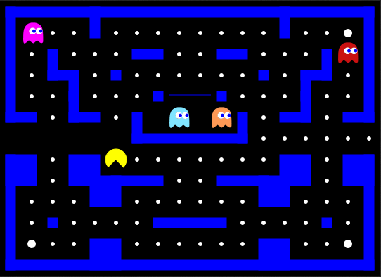
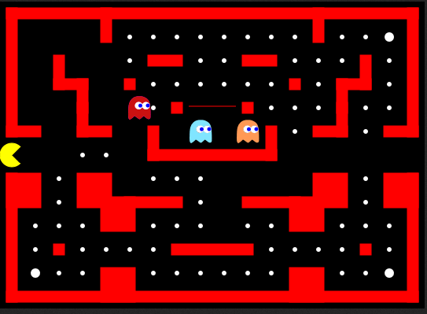

Instructions
Controls
Use your arrow keys or [W,A,S,D] keys to navigate pacman.
To pause / resume the game press [SPACE] or [ESC] or just click into the game area.
Ghosts
Ghosts are creatures that hunt pacman and will kill him if they catch him.
Every ghost has its own strategy to chase down pacman.
Inky
Inky will stay in the ghost house until pacman has eaten at least 30 pills. His home is the bottom right corner.
Blinky 
Blinky is the most agressive of the 4 ghosts. He will start chasing pacman right away, and aim directly at him. His home is the upper right corner.
Pinky
Pinky will start chasing pacman right away, he will always aim 4 fields ahead and 4 fields left of pacman. His home is the upper left corner.
Clyde
Inky will stay in the ghost house until pacman has eaten at least 2/3 of all pills. His home is the bottom left corner.
Ghost moods
The ghosts have two different moods that change the way they act during the game.Scatter mood
This is the default mood. When ghosts are in scatter mood, they will just go to their home corner and stay there.
Chase mood
After a certain time the ghosts change their mood and want to go chasing pacman. This is indicated through the walls turning red.
Items
Pills
The goal of every level is, to eat all the white pills without getting catched by the ghosts. One pill results in 10 points.
Powerpills
In every level there are 4 powerpills, which are a bit bigger than the regular ones. If Pacman eats those, he will get strong enough to eat the ghosts. You can see this indicated by the ghosts turning blue. One powerpill results in 50 points.

Eating a ghost results in 100 points. The soul of the ghost will return to the ghost house before starting to chase Pacman again.